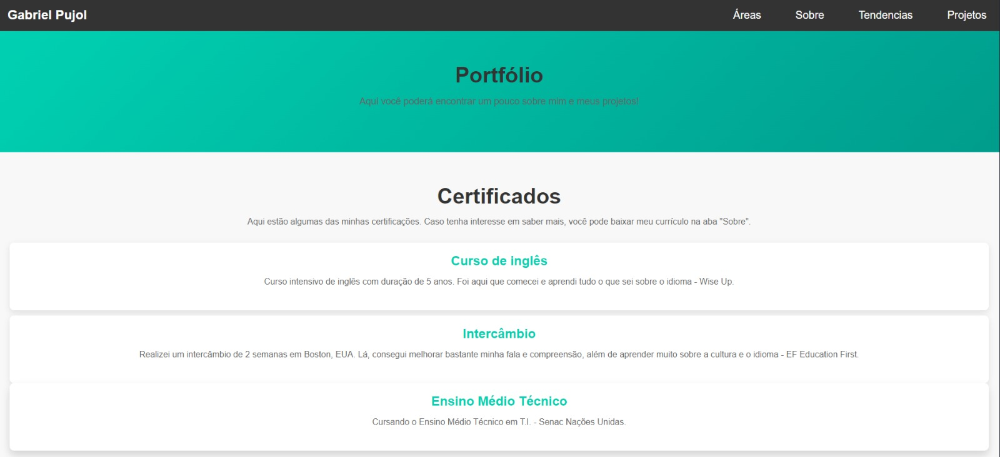

Sobre o Projeto
Este projeto é um portfólio desenvolvido com HTML e CSS, projetado para demonstrar minhas habilidades como desenvolvedor web. Ele apresenta um design moderno e responsivo, com foco em clareza e usabilidade.
O portfólio inclui seções para apresentação de informações pessoais, habilidades, projetos e uma área de contato. A estética é minimalista, destacando a funcionalidade e a navegação simples.

Faça o Download
Interessado no projeto? Baixe o código-fonte e explore como este portfólio foi construído.
Baixar Projeto